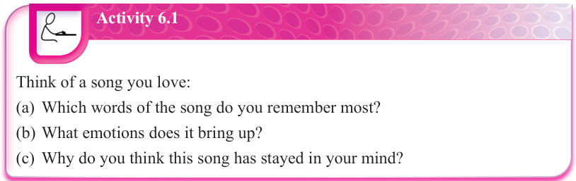

Activity 6.1
Think of a song you love:
Key elements of songwriting
When writing a song for any purpose, it is important to understand the main elements that make a good song.
The following are the fundamental elements that contribute to the structure, feel and impact of a song:
Melody: This is the main tune of the song, often sung by the vocalist(s) or played by the main instrument. It is usually the part that people hum or sing along to. A strong melody is memorable and catchy, making it a crucial part of songwriting.
Lyrics: These are words of a song that express emotions, tell a story or convey a message. Good lyrics often have a strong theme, clear structure, and impactful wording that connects with the audience.
Harmony: This refers to the vocals and background music that support the melody. Harmony adds depth and emotion to a song and is created through voices and instruments such as guitar, piano and others.
Rhythm: This includes the beats and tempo of the song that determine its energy and pace. A song’s rhythm can be slow and emotional, creating a calmness. It can also be fast and energetic, making a song exciting and lively. In some songs, a rhythm can be moderate (that is, between slow and fast), depending on the mood the composer wants to create.
Song structure: A well-composed song falls under a particular structure. For instance, most popular songs in genres such as Bongo fleva, Hip hop, R&B and others follow a standard format which is verse-chorus-verse-chorus-bridge-chorus. A verse introduces the theme or story of the song, a chorus is the most memorable and repeated section, often carrying the main message, while a bridge is a different section that adds variation in the song and leads back to the chorus. Note that song structures differ depending on the genre and choices of the composer.